מערכת לחיזוי ואפיון
סיכוני גניבות רכב בישראל
מערכת למידת מכונה המנתחת נתוני אמת של משטרת ישראל והלמ״ס לאורך 9 שנים (2017–2025) ב-1,206 יישובים. ה-Pipeline משלב מדדי אכיפה מקומיים והנדסת מאפיינים ללא זליגת עתיד, מאמן מודלי חיזוי והסברתיות (SHAP), ופורס ממשק Web להערכת סיכוני גניבה והמלצות מיגון בזמן אמת.
המחקר והגדרת גבולות
01.מקורות הנתונים ופייפליין
Data engineering and pipeline
בסיס הנתונים של הפרויקט נשען על אינטגרציה רב-שנתית (2017–2025) של קבצי מידע חופשיים של משטרת ישראל בשילוב קובצי הלמ״ס, ללא שימוש בנתונים סינתטיים (תא 5 במחברת). תהליך ה-ETL והניקוי ההנדסי מבוקרים באמצעות שרשרת אסרציות קשיחות המבטיחות שלמות נתונים מלאה.
| # | מקור נתונים וקובץ מקומי | שנים / תקופה | היקף ומבנה גולמי | תפקיד בארכיטקטורת האימון והמוצר |
|---|---|---|---|---|
| 1 | יומן גניבות היררכי מפורטstolen_cars_models_2023_2025_FULL.csv |
2023–2025 | 39,328 שורות היררכיות (54,007 גניבות מאומתות: 19,990 ב-2023, 18,759 ב-2024, 15,258 ב-2025) | הקובץ היחיד המשלב באותה שורה יצרן × דגם × שנתון × עיר × שנה; בונה את 24,519 שורות
פאנל האימון (2023 ← 2024) והמבחן (2024 ← 2025). |
| 2 | מאגר דגמים היסטורי ארציstolen_cars_models_2017_2023.csv |
2017–2023 | 84,997 מקרי גניבה לאומיים לפי יצרן, דגם מאוחד וקבוצת רכב (ללא פילוח עירוני) | מזין את היסטוריית הדגמים הרב-שנתית (2017–2025), מפת החום השנתית, ציון הסיכון ההיסטורי בדעיכה
אקספוננציאלית (50% ב-Option B), ופרופיל ה-Fallback (model_year_profile). |
| 3 | תיקי חקירה ואכיפה מוניציפליים (Tab 1 & Tab
2)stolen_cars_by_area.csv |
2018–2023 | 70,666 תיקים שנפתחו ונסגרו לפי תחנה, יישוב, גילוי חשודים, עילת על״ן וכתבי אישום (ללא פילוח דגם) | מאמן ישירות 3 מתוך 5 הפיצ׳רים של מודל ה-XGBoost Poisson
(city_cases_total, city_detection_rate, city_unsolved_rate), מאמן
את מודלי ה-K-Means ו-DBSCAN, ומזין את נוסחת הצמיחה הדינמית (2018–2023). |
| 4 | מפקד אוכלוסין ויישובים (למ״ס)רשימת יישובים ותושבים.csv |
מעודכן 2024–2025 | 1,297 רשויות מקומיות (1,206 יישובים משויכים במאגר המשטרתי המאוחד) | סטנדרטיזציה של שמות יישובים, אוכלוסייה נקייה (population_clean) ונרמול מרחבי. |
| 5 | מצבת כלי רכב מנועיים פעילים (למ״ס)כלי רכב מנועים 2025 |
סוף שנת 2025 | 4,348,275 רכבים מנועיים (מתוכם 3,789,429 פרטיים) | נירמול שכיחות הגניבות לשיעור אקטוארי ל-1,000 רכבים פעילים על הכביש (נספח D, תאים 57–61). |
מתוך 39,328 שורות משטרה גולמיות בקובץ המפורט (2023–2025), ה-
State-Machine Parser
סינן שורות כותרת וסיכומי ביניים וחילץ 26,802 עלי עץ נקיים (בדיוק 54,007 גניבות מאומתות
ב-3 שנות הפאנל 2023–2025). לאחר קיזוז שנת החפיפה 2023 ומניעת כפל ספירה מול מאגר הדגמים ההיסטורי
(84,997 רשומות גלם ב-2017–2023) ומאגר התיקים המוניציפלי (70,666 תיקים ב-2018–2023), מתקבל ציר מאוחד ונקי של
97,580 גניבות מאומתות ב-8 השנים הרציפות (2018–2025) (ו-105,711 גניבות לאורך 9 השנים
המלאות 2017–2025, לצד 142,787 תיקי חקירה מוניציפליים ב-1,245 יישובים), המתנקזים
ל-24,519 רשומות פאנל כרונולוגי עיוור (עיר × דגם × שנתון).
לאן מתנקזים נתוני 2017–2023 ומדוע פאנל המטרה מונה 24,519 רשומות מ-2023–2025?
- מדוע משתנה המטרה ($Y_{T+1}$) בפאנל החיזוי מאומן על 2023 ← 2024 ונבחן על 2024 ← 2025?
יחידת
הניתוח של הפאנל דורשת הצלבה בו-זמנית של
יצרן × דגם × שנת ייצור × עיר × שנת אירוע. משטרת ישראל פרסמה חיתוך משולב זה רק החל משנת 2023 (24,519 צמדי רכב-עיר ייחודיים, המכסים 54,007 גניבות בשנים 2023–2025). כדי לשמור על כלל הברזל של אפס נתונים סינתטיים ולא "להמציא" באינטרפולציה כמה רכבים מדגם מסוים נגנבו בעיר מסוימת ב-2019, יעדי החיזוי של הפאנל הוגדרו על שנות האמת המוצלבות בלבד (אימון: 2023 ← 2024, מבחן עיוור: 2024 ← 2025). - כיצד נתוני 2017–2023 מאמנים ומזינים את המערכת בפועל?
נתוני 2017–2023 אינם נזנחים כלל- הם בונים 4 מנועי ליבה במערכת:
- (א) אימון 3 מתוך 5 מאפייני מודל ה-ML (
XGBoost Poissonו-Random Forest): המאפייניםcity_cases_total,city_detection_rateו-city_unsolved_rateמחושבים מתוך 70,666 תיקי החקירה של 2018–2023 בשילוב הרצף העירוני (סה״כ 142,787 תיקים מוניציפליים בציר 2018–2025); - (ב) אימון מודלי ה-Clustering המרחביים (
K-Means K=4ו-DBSCAN): אומנו במלואם על מדדי הפשיעה והאכיפה של 2018–2023 ב-1,206 יישובים; - (ג) פקטור הצמיחה הדינמי (
calculate_dynamic_growth): משווה את חלון 2021–2023 מול חלון הבסיס 2018–2020 לזיהוי מגמות האצה עירוניות ללא זליגת עתיד; - (ד) שכבת התמחור המוצרית (
Option B) ומנגנון ה-Fallback (model_year_profile): משקללת בדעיכה אקספוננציאלית את כל סדרת הזמן המאוחדת (97,580 גניבות מאומתות ב-8 השנים 2018–2025 ו-105,711 גניבות בכל 9 השנים 2017–2025) לחישוב ציון הסיכון של הדגם (50%).
- (א) אימון 3 מתוך 5 מאפייני מודל ה-ML (
02. מטרת הפרויקט, חזון המוצר ושאלות המחקר
Project vision & research questions
גניבות רכב בישראל הן מכת מדינה שמשפיעה ישירות על הכיס של כל נהג ועל שוק הביטוח כולו. לפי נתוני משטרת ישראל, נגנבים מדי שנה בין 15,000 ל-20,200 כלי רכב (כשמעל 94% מתיקי החקירה נסגרים בעילת "עבריין לא נודע" ופחות מ-4% מגיעים לכתבי אישום), מה שהוביל לזינוק של עד 40% בפרמיות הביטוח המקיף בדגמים מבוקשים. עד היום, לנהג הישראלי ולגורמי התמחור לא הייתה גישה לכלי אובייקטיבי ושקוף שמשלב בין דגם הרכב, שנתון הייצור והביקוש שלו במשחטות החלפים לבין רמת הפשיעה והאכיפה באזור המגורים כדי לאמוד את הסיכון האמיתי ואת הנגזרת הביטוחית הצפויה.
🎯 מטרת העל של הפרויקט (Core Product Vision)
אפיון כמותי, חיזוי ודירוג סיכון מבוסס נתונים של גניבות רכב בישראל: המשתמש בוחר יצרן, דגם, שנתון + עיר/יישוב, והמערכת מפיקה עבורו בזמן אמת ($O(1)$) פרופיל סיכון מותאם אישית הכולל ציון סיכון משוקלל (0–100), עשירון ורמת סיכון ברורה (בסיסית עד קריטית), מגמת גניבה רב-שנתית ותחזית שנה קדימה, הערכת ההשפעה האקטוארית על פוליסת הביטוח, ומפרט המלצות מיגון מעשיות לצמצום הסיכון וחיסכון כספי.
פרויקט זה נבנה לענות על ארבע שאלות מחקר הנדסיות-אקטואריות מוגדרות:
| שאלה | האתגר המחקרי וההנדסי | המתודולוגיה שנבחרה | הערך התוצאתי |
|---|---|---|---|
| Q1: יחסי כוחות | האם הסיכון לגניבה נקבע בעיקר על פי דגם הרכב (ביקוש לחלפים ופריצות טכנולוגית) או על פי המיקום הגיאוגרפי (קרבה לצירי מילוט ולשטחים)? | פירוק שונות דו-גורמי ומודל עץ החלטה (XGBoost / Random Forest) המודד אינטראקציות מרחביות בין דגם לעיר. | הפרדה לשכבת דגם (50%) ושכבת עיר (45%) בנוסחת התמחור המוצרית . |
| Q2: שיעורי חשיפה | כיצד מנרמלים את ספירת הגניבות הגולמית ביחס למצבת הרכבים הפעילים בפועל על הכביש (מניעת הטיית נפח שוק)? | אינטגרציה עם קובץ מצבת הרכב של הלמ״ס (2025) וחישוב אומדן חשיפה דטרמיניסטי של גניבות ל-1,000 רכבים פעילים. | זיהוי דגמים עם שיעור גניבה יחסי קיצוני (16.7 עד 55.4 ל-1,000) אל מול ממוצע ארצי של 3.83‰ בפרטיים. |
| Q3: חיזוי ספירה | כיצד חוזים במדויק ספירות גניבה עתידיות בנתונים דלילים (Zero-Inflated) עם 59.6%–63.4% תאי אפס ופיזור-יתר של 4.93, ללא זליגת עתיד? | פאנל כרונולוגי עיוור One-Step-Ahead Out-of-Time בשני מסלולים: ספירה בדידה (Poisson Loss) וציון סיכון רציף (0–100). | הפחתת שגיאת זנב במוקדים ב-33.9% (מ-17.39 ל-11.50), הבסת מודל ההתמדה ב-25.7%, ו-$R^2 = +0.1144$ במסלול הרציף. |
| Q4: החלטה אקטוארית | כיצד לתרגם פלט AI הסתברותי למנגנון תמחור שקוף, מוסבר ודטרמיניסטי בעל זמן שליפה של $O(1)$ ומנוע המלצות מיגון? | ארכיטקטורת שתי שכבות המשלבת מודל אמפירי יחד עם היוריסטיקה מוצרית, פרופיל שנתון מפורש וחוזה נתונים מילוני. | ציון סיכון שקוף (0–100), מנגנון Fallback ב-4 רמות ומנוע המלצות מיגון אוטומטי למשתמש ולסוכן ה-AI. |
03. ארכיטקטורת שתי השכבות והממשק משתמש
Two-layer architecture and UI
אחת הנקודות הקריטיות להבנת המערכת היא ההפרדה החדה, הוויזואלית והמתמטית, בין ״מה המודל חוזה״ (Predictive AI) לבין ״איך המוצר מתמחר ומציג״ (Actuarial Decision-Support). הממשק שפותח אינו מציג לקורא ״קופסה שחורה״, אלא מחבר שני עולמות משלימים.

שכבת החיזוי האמפירית
שכבה זו פועלת תחת כללים מתודולוגיים קשיחים של למידת מכונה:
- ללא שום זליגת מידע מעגלית: המודל לעולם אינו מקבל כקלט את נוסחת הסיכון או את סך הגניבות העתידי. כל המאפיינים חושבו אך ורק על בסיס העבר ($T \le \text{Base Year}$).
- מודלי ליבה דו-מסלוליים:
XGBoost Poisson Regression(עם פונקציית מחירcount:poisson) לחיזוי ספירות בדידות, ו-Random Forest Regressorלחיזוי ציון סיכון רציף (0–100). - 5 מאפיינים מובילים נקיים מזליגה:
lag_1_thefts(גניבות אשתקד),city_cases_total(נפח פשיעה מוניציפלי),model_year(שנתון ייצור),city_detection_rateו-city_unsolved_rate. - פלט השכבה: חיזוי של כמות הגניבות השנתית הצפויה ($\hat{Y}$) וסיווג אוטומטי לעשירון סיכון אמפירי (Deciles 1-10).
שכבת התמחור וההחלטה המוצרית
שכבה זו מייצגת את הלוגיקה העסקית שמוצגת למשתמש הקצה בממשק (Web UI):
- נוסחת הסיכון המשוקללת
Risk_Score = 0.50 × Model_Risk + 0.45 × City_Risk + 0.05 × Macro_Adjustment
- 50% סיכון דגם: נגזר מעצימות הגניבות המשוקללת של הדגם (בדעיכה אקספוננציאלית היסטורית).
- 45% סיכון עירוני: מחושב בסקאלה לוגריתמית מנפח תיקי הגניבה בעיר ($\text{log1p}(\text{total\_cases})$ מנורמל לטווח 15–100), משולב עם ניתוח צירי מילוט ושיעורי אי-פענוח (על״ן).
- 5% כיול מאקרו: רכיב ייחוס ארצי המיישר את סקאלת הסיכון לטווח 0–100.
- מנגנון cold-start imputer: ב-4 רמות:
צמד דגם×עיר ← פרופיל שנתון מפורש (
model_year_profile) ← ממוצע דגם ארצי ← אומדן בסיס עירוני.
מפת התמצאות: הבחנה מדויקת בין 3 מנועי החיזוי והציון במערכת
כדי למנוע בלבול בין המדדים השונים במחברת ובדשבורד, להלן ההפרדה המדויקת בין שני מסלולי למידת המכונה (Track 1 ו-Track 2) לבין נוסחת התמחור המוצרית (50/45/5):
XGBoost Poisson
מה הוא חוזה: ספירת גניבות שנתית בדידה ($\hat{Y}_{T+1} \in [0, \infty)$) לכל צמד
דגם × שנתון × עיר.
מדד מוביל: Tail MAE = 11.50 ($-33.9\%$ שגיאת זנב) ומתאם דירוג
ρ = 0.3186.
שימוש: דירוג אקטוארי לעשירוני סיכון (Deciles 1–10, כאשר עשירון 10 לוכד 33.94% מהגניבות).
Random Forest (0–100)
מה הוא חוזה: ציון עצימות רציף מכויל לוגריתמית (continuous_risk_target בטווח
0–100).
מדד מוביל: $R^2 = +0.1144$ חיובי מובהק ו-MAE = 6.24
נקודות.
שימוש: הוכחה מתודולוגית שכאשר ממתנים את הצפת האפסים בסקאלה לוגריתמית, עצי ההחלטה משיגים
$R^2$ חיובי ויציב.
Risk score (50/45/5)
מה הוא מחשב: ציון סיכון מוצרי שקוף (composite_theft_score בטווח 15–100):
$0.50\text{ Model} + 0.45\text{ City} + 0.05\text{ Macro}$.
מדד מוביל: שליפה דטרמיניסטית ב-$O(1)$ עם מנגנון Fallback ב-4 רמות.
שימוש: תצוגת מד הסיכון בדשבורד (index.html) והפעלת מנוע המלצות המיגון.
04. האבולוציה ההנדסית של הפרויקט: 4 תחנות הכשל והפתרון
Engineering storytelling (4 milestones)
ארבעת המכשולים המתודולוגיים המרכזיים שהתגלו במחקר ופתרונם ההנדסי במעבר מנתונים גולמיים למודל ייצור מכויל:
קובץ משטרתי היררכי שבור וכפילות סאן יאנג
State-Machine Parser המסנן סיכומי ביניים ומאמת מתמטית מול עוגן
שורה 6 של המשטרה (19,990 ב-2023; 18,759 ב-2024; 15,258 ב-2025).
הטיית חשיפה רב-שנתית וזליגת עתיד (Lookahead Bias)
63.4% תאי אפס ופיזור-יתר (Dispersion = 4.93)
XGBoost Poisson חותך את שגיאת הזנב
ב-33.9% (ל-11.50) ומביס התמדה ב-25.7%; Random Forest משיג
$R^2 = +0.1144$ בציון הרציף.
מדידת הצלחה בדירוג סיכון יחסי והפרדת עשירונים
05. חשיפת מצבת כלי הרכב בישראל (למ״ס 2025): נירמול סיכון בסיס
Core chapter: fleet exposure
בחינה גולמית של מספר הגניבות לבדו יוצרת עיוות אקטוארי: דגם נפוץ מאוד על הכביש יציג נפח גניבות מוחלט גבוה גם אם הסיכון היחסי של כל רכב בודד מתון, ולהפך. על מנת לנרמל את החשיפה, שילבנו בנספח D של מחברת המחקר את נתוני מצבת כלי הרכב המנועיים הרשמית של הלמ״ס לסוף שנת 2025 (הודעה לתקשורת 102/2026 מתאריך 26.03.2026).
- מצבת כלי הרכב הכללית: 4,348,275 כלי רכב מנועיים פעילים בישראל (גידול של 3.0% לעומת 2024), מתוכם 3,789,429 כלי רכב פרטיים (גידול של 3.2%).
- מהפכת ההנעה: 216,265 כלי רכב חשמליים מלאים (עלייה חדה של 32.9% לעומת 2024; מתוכם 203,947 פרטיים המהווים 5.38% מהצי הפרטי), ו-587,314 כלי רכב היברידיים (15.14% מהפרטיים, עלייה של 22.8%). סך הכל 18.4% מהפרטיות החדשות שעלו לכביש ב-2025 היו חשמליות (לעומת 73.61% בנזין ו-5.43% סולר במצבה הכללית).
- גיל ומאפיינים: גיל ממוצע של 7.8 שנים (40.3% מהרכבים בני 0–4 שנים, 30.8% בני 5–9 שנים, ו-28.9% בני 10+ שנים). 88.7% בבעלות פרטית, 95.8% תיבת הילוכים אוטומטית, והצבע הדומיננטי הוא לבן (39.4% מכלל המצבה, 46.9% מחדשות 2025). בארצנו פועלים 1,454 יישובים עם קצב של 430 רכבים ל-1,000 תושבים.
- שיעורי בסיס ארציים: מתוך קצב של כ-20,200 אירועי גניבה שנתיים (Run-rate 2025 מ-15,258 גניבות ב-9 חודשים), שיעור הגניבה הארצי הממוצע עומד על 4.65 גניבות ל-1,000 רכבים מנועיים (ו-3.83 גניבות ל-1,000 רכבים פרטיים).
מתודולוגיית אמידת החשיפה ברמת דגם (Deterministic Exposure Estimation)
מאחר שפרסומי הלמ״ס מפרטים את מצבת הרכבים לפי ארץ ייצור (יפן 22.7%, קוריאה הדרומית 15.8%, סין 9.2% במצבה ו-28.0%
מהחדשות ב-2025) ונתחי שוק יצרנים ארציים (טויוטה 13.0%, יונדאי 11.1%, צ׳רי 8.8%, קיה 8.7%, סקודה 8.3%, מאזדה
7.0%, מיצובישי 5.0%, סוזוקי 5.0%), אך אינם מפרסמים טבלת מפקד פתוחה ברזולוציית דגם × עיר, מחברת
המחקר (תא 59) מחשבת אומדן מצבה דטרמיניסטי: שילוב נתח השוק הרשמי של היצרן בלמ״ס עם משקל הדגם
הפנימי (0.3 + 0.7 * model_internal_weight) מנורמל לסך 3,789,429 הרכבים הפרטיים, עבור דגמים מרכזיים
($\ge 3,000$ רכבים פעילים ו-$\ge 20$ גניבות שנתיות).
1. ביקוש קשיח לחלפים של דגמים קוריאניים ויפניים נפוצים
טויוטה קורולה, יאריס, יונדאי אלנטרה, איוניק וקיה נירו מובילים את שיעור הסיכון היחסי ל-1,000 רכבים פעילים בשל שילוב של סחירות חלפים גבוהה במשחטות הרכב ביו״ש ונגישות פריצה אלקטרונית לשנתוני 2019–2023.
2. פער הסיכון מול רכבים חשמליים חדשים מסין וממערב
בעוד שמותגים סיניים וחשמליים תפסו 28.0% מהעליות לכביש ב-2025, שיעור הגניבה שלהם נמוך משמעותית מהממוצע הארצי הודות למערכות Telematics מוצפנות, מעקב לווייני מובנה ומיעוט ביקוש לחלפי מנוע בעירה.
טבלת טופ-15 דגמים בישראל: שיעור גניבות מנורמל ל-1,000 רכבים פעילים (פלט מחברת תא 59)
| # | יצרן | דגם | קצב גניבות שנתי (Run-Rate 2025) | אומדן מצבת רכבים פעילים (למ״ס) | שיעור גניבות ל-1,000 | רמת סיכון יחסית |
|---|---|---|---|---|---|---|
| 1 | טויוטה (Toyota) | קורולה (COROLLA) | 1,840 | 33,225 | 55.38 | קריטי במיוחד (פי 14.5 מהממוצע) |
| 2 | טויוטה (Toyota) | יאריס (YARIS) | 636 | 15,045 | 42.27 | קריטי במיוחד |
| 3 | יונדאי (Hyundai) | אלנטרה (ELANTRA) | 481 | 13,285 | 36.21 | קריטי (High Theft) |
| 4 | יונדאי (Hyundai) | איוניק (IONIQ) | 575 | 15,916 | 36.13 | קריטי (High Theft) |
| 5 | קיה (Kia) | נירו (NIRO) | 360 | 13,159 | 27.36 | גבוה מאוד |
| 6 | טויוטה (Toyota) | לנד קרוזר (LAND CRUISER) | 415 | 16,556 | 25.07 | גבוה מאוד |
| 7 | קיה (Kia) | סלטוס (SELTOS) | 223 | 9,631 | 23.15 | גבוה מאוד |
| 8 | קיה (Kia) | ספורטאז׳ (SPORTAGE) | 288 | 13,228 | 21.77 | גבוה |
| 9 | מיצובישי (Mitsubishi) | אאוטלנדר (OUTLANDER) | 219 | 10,322 | 21.22 | גבוה |
| 10 | מאזדה (Mazda) | מאזדה 3 (MAZDA 3) | 357 | 17,668 | 20.21 | גבוה |
| 11 | יונדאי (Hyundai) | טוסון (TUCSON) | 300 | 15,325 | 19.58 | גבוה |
| 12 | פיג׳ו (Peugeot) | 3008 | 75 | 3,941 | 19.03 | בינוני-גבוה |
| 13 | קיה (Kia) | סורנטו (SORENTO) | 201 | 10,843 | 18.54 | בינוני-גבוה |
| 14 | קיה (Kia) | פיקנטו (PICANTO) | 285 | 16,090 | 17.71 | בינוני-גבוה |
| 15 | יונדאי (Hyundai) | i20 (I20) | 215 | 12,852 | 16.73 | בינוני-גבוה |
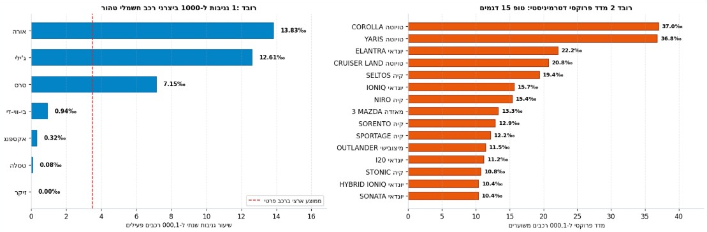
תובנות מתרשים 5.1- מודל הסיכון היחסי ומניעת הטיית נפח שוק (תאים 60–61 במחברת):
- ממצא אמפירי (Finding): טויוטה קורולה (55.38‰- פי 14.5 מהממוצע הארצי של 3.83‰ בפרטיים), טויוטה יאריס (42.27‰), יונדאי אלנטרה (36.21‰) ויונדאי איוניק (36.13‰) מובילים בפער חד את שיעור הגניבה ל-1,000 רכבים פעילים. גם דגמי פנאי מבוקשים כגון קיה נירו (27.36‰), טויוטה לנד קרוזר (25.07‰) וקיה סלטוס (23.15‰) מציגים סיכון יחסי של פי 6 עד 7 מהממוצע.
- פרשנות אקטוארית (Interpretation): המעבר מספירה מוחלטת להסתברות מותנית מנטרל את ״חוק המספרים הגדולים״. דגמים אלו אינם נגנבים רק בגלל תפוצתם, אלא בשל ביקוש קשיח לחלפים במשחטות הרכב וחולשות אימובילייזר/מפתח חכם בשנתוני 2019–2023.
- מגבלה מתודולוגית (Limitation): מאחר שהלמ״ס מפרסם את נתחי השוק הרשמיים ברמת יצרן וסוג הנעה
ארציים (ולא כמפקד פתוח של
דגם × עיר), מצבת הרכבים הפעילים ברמת הדגם מבוססת על אומדן דטרמיניסטי משוקלל לדגמים מרכזיים ($\ge 3,000$ רכבים פעילים).
06. קלסטרינג גיאוגרפי ומוקדי פשיעה מרחביים (K-Means & DBSCAN)
Core chapter: spatial clustering
גניבות רכב בישראל הן תופעה מרחבית מובהקת המושפעת מצירי תנועה מהירים, קרבה לקו התפר, ורמת השיטור העירונית. פרק זה מפרט כיצד אלגוריתמי אשכול בלתי מונחים (Unsupervised Clustering בנספח B, תאים 52–54) חילצו את דפוסי הסיכון על פני 1,206 רשויות ויישובים (על בסיס מאגר האכיפה של 2018–2023), וכיצד תובנות אלו מזינות את רכיב הסיכון העירוני (45%) בנוסחת התמחור של הממשק.
חלוקת 1,206 הרשויות ל-4 אשכולות סיכון סביבתיים (K-Means)
אלגוריתם K-Means ($K=4$) חילק את 1,206 הרשויות המקומיות בישראל ל-4 אשכולות סיכון הומוגניים (עם מדד
צללית מובהק של Silhouette Score = 0.508), על בסיס שלושה מאפיינים מתוקננים (StandardScaler):
נפח תיקים לוגריתמי (log_total_cases), שיעור גילוי חשודים (detection_rate), ושיעור
תיקי על״ן (unsolved_unknown_rate):
- Cluster 1- מוקדי פשיעה כבדים (High-Risk Heavy Crime Centers: 26 ערים): תל אביב-יפו, פתח תקווה, ירושלים, ראשון לציון, באר שבע, נתניה, חולון: נפח גניבות שנתי אדיר לצד שיעורי גילוי נמוכים.
- Cluster 2- סיכון בינוני-גבוה (Moderate-High Risk: 137 יישובים): ערי מעטפת וצירי תנועה ראשיים (רמלה, לוד, כפר סבא, רחובות, אשדוד, הרצליה) הסמוכים לצירי מילוט.
- Cluster 3- פעילות בינונית-נמוכה (Medium-Low Activity: 179 יישובים): מועצות מקומיות ויישובים עירוניים קטנים עם חשיפה מתונה ופענוח גבוה מהממוצע.
- Cluster 0- סיכון בסיס נמוך (Low Risk Baseline: 864 יישובים): רוב היישובים הכפריים, קיבוצים ומושבים מרוחקים שבהם נפח אירועי הגניבה אפסי.
זיהוי חריגים מרחביים (DBSCAN) וצירי מילוט לקו התפר
אלגוריתם DBSCAN (שכויל עם פרמטרים של $\varepsilon = 0.8, \text{MinPts} = 4$) זיהה באופן
אוטומטי 8 רשויות חריגות קיצוניות (Spatial Outliers) בעלות פרופיל פשיעה/אכיפה חריג, לצד
ניתוח מקדם הקרבה לצירי מילוט (proximity_to_corridors):
- מוקדי קו התפר ומחלפי כביש 6 / 443 / 1: טייבה וקלנסווה (מקדם קרבה
0.98), ירושלים, רמלה ולוד (מקדם0.95), פתח תקווה וכפר סבא (מקדם0.90), ובאר שבע בדרום (מקדם0.85). - השפעה תפעולית: קרבה למחלפים מאפשרת לחוליית גניבה לחצות את קו התפר תוך דקות ספורות מרגע הפריצה, לפני שמערכות האיתור או ניידות הסיור מספיקות לחסום את הציר.
- אינטגרציה לממשק: כל 1,206 היישובים מופו בקובץ הנתונים עם ציון הסיכון העירוני, אחוז תיקי העל״ן, ומדד הקרבה לציר מילוט.
city_risk_score (45%) ומיפוי ערי המילוט המרכזיותבמנוע התמחור של המערכת (תא 11 ותא 43 במחברת), ציון הסיכון העירוני מחושב בסקאלה לוגריתמית מתוך סך תיקי הגניבה בעיר: $$\text{City\_Risk\_Score} = \text{ round}\!\left(\frac{\ln(1 + \text{Total\_Cases})}{\max \ln(1 + \text{Total\_Cases})} \times 85 + 15\right)$$ ערים מובילות המשלבות ציון עירוני גבוה עם קרבה קריטית לצירי מילוט (תא 20): פתח תקווה (3,099 תיקים, ציון עיר 95, קרבה 0.90), ראשון לציון (2,060 תיקים, ציון 91, קרבה 0.80), ירושלים (2,049 תיקים, ציון 91, קרבה 0.95), באר שבע (1,153 תיקים, ציון 85, קרבה 0.85), רמלה (549 תיקים, ציון 78, קרבה 0.95), ולוד (387 תיקים, ציון 74, קרבה 0.95).
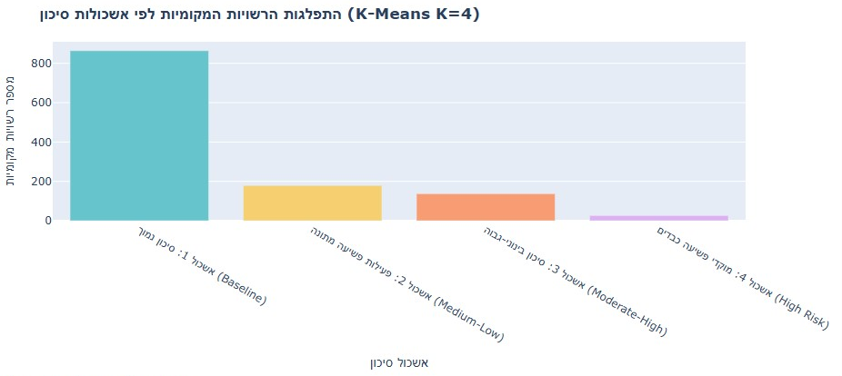
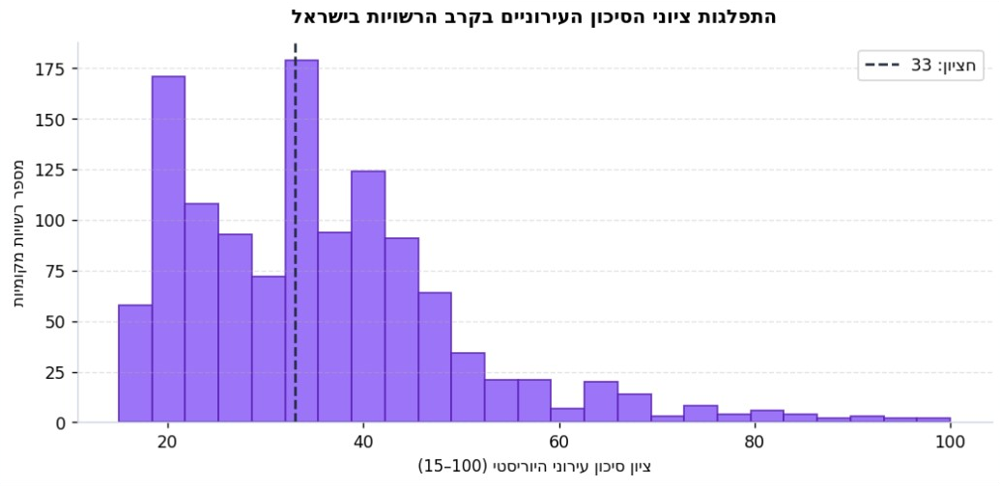
תובנות מתרשימים 6.1–6.2- מבנה האשכולות המוניציפלי (נספח B, תאים 52–54):
- ממצא אמפירי (Finding): כ-71.6% מהיישובים בישראל (864 רשויות באשכול 1) נמצאים בסיכון בסיס נמוך עם אירועי גניבה בודדים, בעוד ש-26 ערים בלבד (אשכול 4- 2.1% מהיישובים) ו-137 יישובי מעטפת (אשכול 3) מרכזים את עיקר נפח הפשיעה הארצי.
- פרשנות תפעולית (Interpretation): פילוח ה-K-Means (עם Silhouette = 0.508) מוכיח כי סיכון
גיאוגרפי אינו מתפלג נורמלית אלא יוצר משטרי פשיעה מובחנים, מה שמצדיק שימוש בסקאלה לוגריתמית עבור
city_risk_score(45% ממשקל הציון המוצרי).
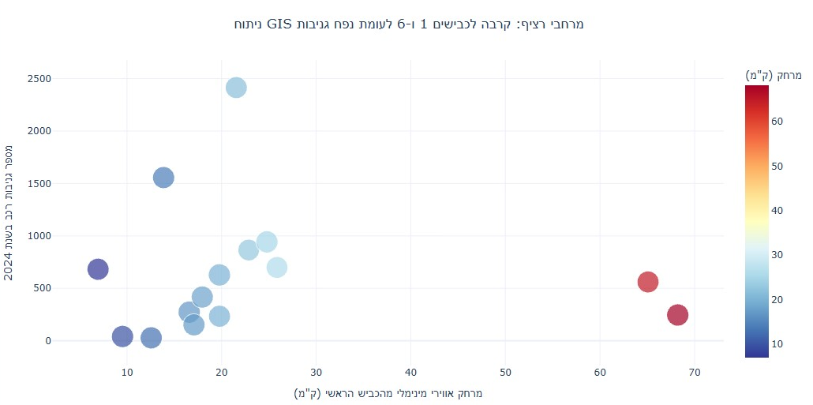
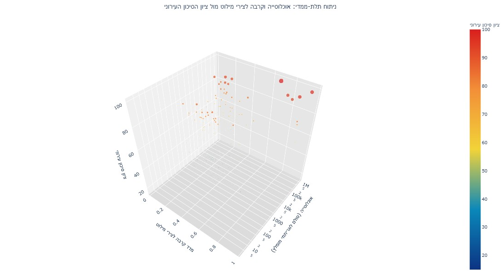
תובנות מתרשימים 6.3–6.4- היפותזת צירי המילוט המרחביים (תא 20 במחברת):
- ממצא אמפירי (Finding): קיים ריכוז מובהק של ערי סיכון קריטי (ציון עירוני 74–95) באזור הסף
הגיאוגרפי שמעל
proximity_to_corridors >= 0.80(פתח תקווה 0.90, ירושלים 0.95, ראשון לציון 0.80, באר שבע 0.85, כפר סבא 0.90, רמלה 0.95 ולוד 0.95). - פרשנות קרימינולוגית (Interpretation): נגישות מיידית למחלפי רוחב ואורך (כביש 6, כביש 443, כביש 1 וכביש 60) מקצרת את זמן המילוט מרגע הפריצה ועד חציית קו התפר לפחות מ-15 דקות- חלון זמן קצר מכדי שניידות סיור או מוקדי איתור יספיקו ליירט את הרכב.
- מגבלה מתודולוגית (Limitation): מדד הקרבה המרחבי משקף מתאם גיאוגרפי חזק (Association), אך אינו מוכיח סיבתיות בלעדית ללא נתוני GPS של מסלולי המילוט בפועל של כל אירוע.
07. ניתוח נתונים חקרני (Visual EDA) והתפלגויות לפי סוג רכב
Exploratory data analysis
פרק 4 במחברת המחקר (תאים 13–20) מנתח את מאפייני הפשיעה והתפלגות הגניבות לאורך השנים 2017–2025 על פני שישה ממדים מרכזיים. בהתאם לכלל המתודולוגי של המחברת, לכל תרשים מוצגים מתחתיו ממצאי הנתונים (Finding), הפרשנות המקצועית (Interpretation) והמגבלה המתודולוגית (Limitation).
רכבים פרטיים: 71.7%
הנתח המרכזי מכלל אירועי הגניבה בישראל (38,713 מקרים מאומתים ב-2023–2025). מונע מביקוש קשיח לחלקי מרכב, מנועים, תיבות הילוכים וממירים קטליטיים במשחטות הרכב.
רכב דו-גלגלי: 19.0%–22.5%
קטנועים ואופנועים (10,244 מקרים). יחד עם הרכבים הפרטיים מהווים מעל 90.6% מכלל גניבות הרכב בישראל, עם רגישות גבוהה לגניבות רחוב מהירות במרכזי הערים.
מסחריות, משאיות ומוניות: 9.3%
רכבי עבודה, טנדרים, משאיות וציוד הנדסי (5,050 מקרים). מאופיינים בשווי כלכלי גבוה במיוחד לכל אירוע ובשימוש בהברחות ציוד כבד ורכבי שטח לדרום וליו״ש.
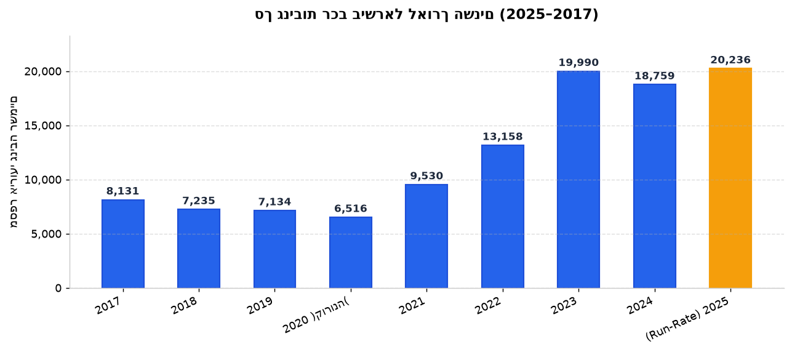
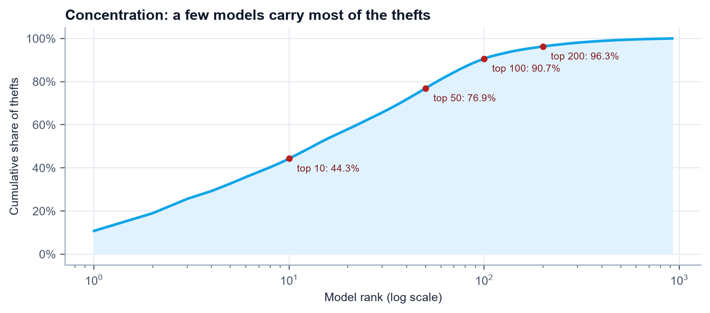
תובנות מאיור 7.1- מגמות לאומיות בציר הזמן (2017–2025, תא 14):
- ממצא (Finding): בין השנים 2017–2020 עמד היקף הגניבות על רמה מתונה (6,516 בשפל סגרי הקורונה ב-2020), אך החל מ-2021 חלה קפיצת מדרגה מבנית: זינוק ל-13,158 ב-2022, שיא של 19,990 ב-2023 (לאחר ניקוי כפילות סאן יאנג), 18,759 ב-2024, וקצב שנתי (Run-Rate) של 20,236 ב-2025 (מתוך 15,258 ב-9 חודשים).
- פרשנות (Interpretation): מחסור עולמי בחלפים וזינוק במחירי הרכב החדשים לאחר 2021 הגדילו דרמטית את הכדאיות הכלכלית של גניבות רכב לפירוק במשחטות.
- מגבלה (Limitation): עמודת 2025 משקפת תקנון לקצב שנתי ($\times 12/9$) של 9 חודשי דיווח ראשונים לצורך השוואה שנתית אחידה.
תובנות מאיור 7.2- חוק פארטו וריכוזיות הדגמים (Power-Law, תא 15):
- ממצא (Finding): מתוך למעלה מ-1,650 דגמים במאגר, 10 דגמים בלבד אחראים ל-41.4% מכלל הגניבות, 50 דגמים מכסים 72.6%, ו-100 דגמים מכסים 86.3%.
- פרשנות והצדקת משקל 50% לדגם (Interpretation): ממצא זה מעגן מדעית את ההחלטה להעניק 50% ממשקל הציון לדגם הרכב: שוק החלפים הבלתי-חוקי ממוקד בדגמים ספציפיים ומייצר ביקוש קשיח שאינו תלוי רק במיקום החניה. חברות ביטוח יכולות למנוע מעל 70% מסיכון התביעות באמצעות מיגון דיפרנציאלי ל-50 דגמים בלבד.
- מגבלה (Limitation): העקומה מציגה נפח מצטבר גולמי ולכן יש לשלבה עם נרמול מצבת הלמ״ס בפרק 05.

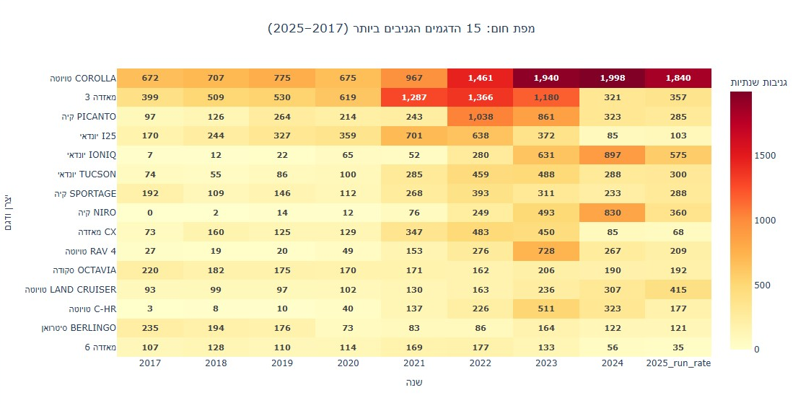
תובנות מאיור 7.3- עקומת גיל ושנתון הרכב (Model Year Risk Curve):
- ממצא (Finding): כלי רכב משנתוני ייצור 2019–2022 (בני 3 עד 6 שנים) מרכזים את נפח הגניבות הגבוה ביותר במדינה (4,383 גניבות לשנתון 2019; 5,168 לשנתון 2020; 6,053 לשנתון 2021; ו-5,419 לשנתון 2025), בעוד שרכבים בני 10+ שנים חווים צניחה חדה בגניבות.
- פרשנות (Interpretation): רכבים בני 3–6 שנים נמצאים ב״נקודת השיא האקטוארית״: הם סיימו לרוב את תקופת האחריות הרשמית ודורשים חלפים בשוק המשני, שוויים הכלכלי עדיין גבוה, ומערכות המיגון שלהם מוכרות לכנופיות הפריצה.
- מגבלה (Limitation): שנתון 2025 נמוך במספרים מוחלטים בין היתר בשל משך חשיפה חלקי על הכביש.
תובנות מאיור 7.4- מפת חום רב-שנתית של 15 הדגמים המובילים (תא 17):
- טויוטה קורולה בראש: שומרת על הבכורה כרכב הנגנב ביותר בישראל עם שיא של 1,940 גניבות ב-2023, 1,998 גניבות ב-2024 וקצב של 1,840 ב-2025.
- זינוק פי 128 ביונדאי איוניק (IONIQ): מ-7 גניבות בלבד ב-2017 (עם כניסת הדגם לשוק) לזינוק אקספוננציאלי שהגיע לשיא של 897 גניבות ב-2024, לצד התכהות חדה בדגמי קיה נירו (830 ב-2024) וטויוטה ראב-4 (728 ב-2023).
- תנודתיות גלית במאזדה 3: זינוק לשיא של 1,366 גניבות ב-2022 ו-1,180
ב-2023, ולאחריו צניחה חדה ל-321 ב-2024 עם התיישנות השנתונים המבוקשים- הוכחה לכך שהמודל חייב להישען על
lag_1_theftsעדכני ולא על ממוצע היסטורי עיוור.
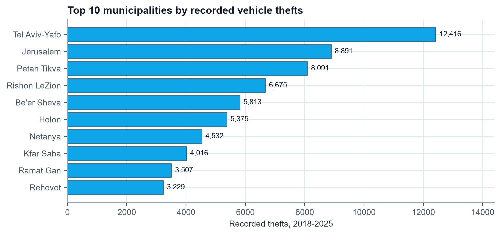
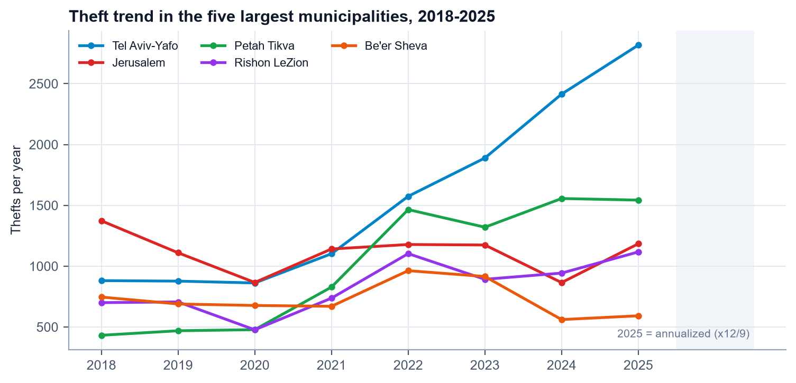
תובנות מאיורים 7.5–7.6- מוקדים מוניציפליים ודינמיקת 5 הערים המובילות (תאים 16 ו-18 במחברת):
- ממצא (Finding): תל אביב-יפו מובילה בפער ניכר (12,416 גניבות מצטברות ב-2018–2025) עם נסיקה חדה ומתמשכת מ-860 גניבות ב-2020 למעל 2,800 בקצב 2025. אחריה ניצבות ירושלים (8,891) ופתח תקווה (8,091- שזינקה פי 3.5 מאז 2020 ועקפה את ירושלים בשנים 2022–2025), וכן ראשון לציון (6,675), באר שבע (5,813), חולון (5,375) ונתניה (4,532).
- פרשנות (Interpretation): השילוב של צפיפות כלי רכב חונים בלילה בערי גוש דן והשרון יחד עם נגישות מיידית לכביש 6, כביש 5 וכביש 443 הופך את תל אביב, פתח תקווה וכפר סבא למוקדי הטרף המרכזיים של חוליות הגניבה.
- מגבלה (Limitation): נפח גניבות עירוני מושפע מגודל האוכלוסייה וממספר היוממים הנכנסים לעיר מדי יום; לכן בשכבת ה-ML הוא משולב יחד עם מדדי האכיפה היחסיים של העיר.
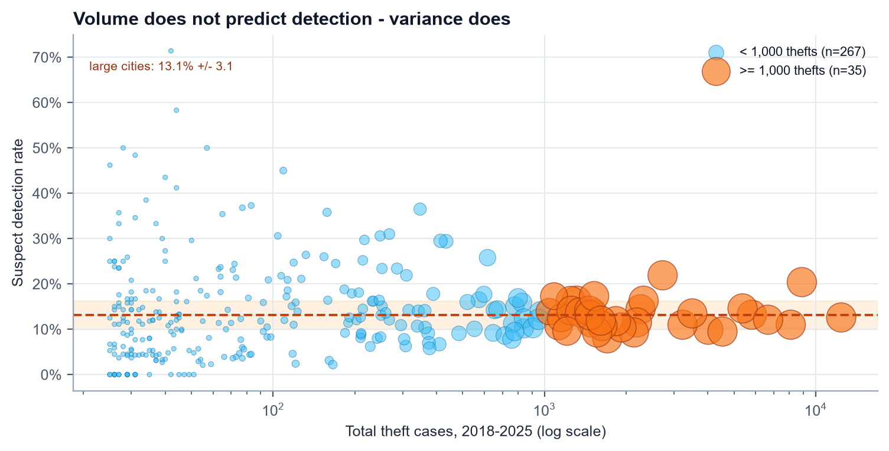
תובנות מאיור 7.7- פרדוקס האכיפה המשטרתי (Law Enforcement Context, תא 19):
- ממצא אמפירי (Finding): קיים מתאם שלילי מובהק (קו מגמה OLS יורד) בין היקף הפשיעה בעיר לבין אפקטיביות הפענוח: בכל הערים הגדולות שבהן מעל 1,000 תיקי גניבה (תל אביב, ירושלים, פתח תקווה, ראשון לציון, באר שבע), שיעור גילוי החשודים קורס אל מתחת לרף ה-13%, ומעל 94% מתיקי החקירה נסגרים בעילת ״עבריין לא נודע״ (על״ן) (91,341 תיקי על״ן מול 4,584 חוסר ראיות במאגר).
- פרשנות תפעולית (Interpretation): שיעורי פענוח גבוהים (30%–60%) מתקיימים כמעט אך ורק ביישובים פריפריאליים קטנים שבהם מתרחשים מקרים בודדים. במוקדי הביקוש העירוניים, עומס האירועים ומהירות ההברחה לשטחים מנטרלים את החקירה הרטרואקטיבית ומחייבים מניעה מוקדמת מבוססת חיזוי.
- מגבלה מתודולוגית (Limitation): נתוני האכיפה משקפים את תוצאות החקירה ברמת תחנת המשטרה/היישוב בשנים 2018–2023, ואינם מפרידים בין תפיסה על חם במחסום לבין פענוח מודיעיני מאוחר.
08. תכנון מערך החיזוי, מניעת זליגת עתיד וקטלוג המאפיינים
Prediction design and zero leakage
חיזוי סדרות עיתיות של פשיעה דורש משטר קפדני של אפס זליגת מידע עתידי (Zero Lookahead Leakage). חלוקה אקראית של נתונים (Random Train/Test Split) מהווה שגיאה מתודולוגית חמורה בלמידת מכונה של סדרות עתיות, שכן היא מאפשרת למודל ״להציץ״ לתוך אירועי העתיד.
- סט אימון (Train Panel: $T_{\text{lag}} = 2023 \rightarrow T_{\text{target}} = 2024$): 24,519 רשומות. כל המאפיינים חושבו אך ורק על בסיס מידע שהיה ידוע עד סוף 2023 ($t \le 2023$). ממוצע המטרה: 0.694 גניבות לצמד דגם-עיר; ממוצע מקדם צמיחה עירוני דינמי: 1.257.
- סט מבחן עיוור (Out-of-Time Test Panel: $T_{\text{lag}} = 2024 \rightarrow T_{\text{target}} = 2025$): 24,519 רשומות. המאפיינים חושבו אך ורק על בסיס מידע עד סוף 2024 ($t \le 2024$). ממוצע המטרה: 0.574 גניבות; ממוצע מקדם צמיחה דינמי: 1.090.
- נוסחת הצמיחה הדינמית נקייה מזליגה (
calculate_dynamic_growth): מחשבת לכל עיר ושנת יעד $T$ את היחס בין חלון שלוש השנים הקודמות ($T-3, T-2, T-1$ במשקלות דעיכה $0.2, 0.3, 0.5$) לבין ממוצע חלון הבסיס המוקדם ($T-6, T-5, T-4$), תוך חסימה מוחלטת של שנת המטרה $T$.
קטלוג מאפייני המודל והפאנל (Leakage-Free Feature Audit- תא 25):
| קטגוריה | שם המאפיין בקוד | הגדרה מתמטית ומקור | תפקיד במודל ובמערכת |
|---|---|---|---|
| 1. זיכרון אוטו-רגרסיבי Core Feature #1 |
lag_1_thefts(ו- lag_1_log במסלול 2) |
$Y_{i, c, T-1}$ וכן $\ln(1 + Y_{i, c, T-1})$ (סך גניבות הדגם $i$ בעיר $c$ בשנה הקודמת בלבד) | המנבא הדומיננטי ביותר ב-SHAP: לוכד את עצימות הבסיס של הדגם הספציפי באותה רשות מקומית. |
| 2. נפח פשיעה מוניציפלי Core Feature #2 |
city_cases_total |
סך תיקי גניבות הרכב שנפתחו בעיר $c$ בסקר ההיסטורי המשטרתי | המנבא השני בחשיבותו: מייצג את רמת החשיפה העירונית הכוללת ותשתית הפשיעה המקומית. |
| 3. שנתון וגיל הרכב Core Feature #3 |
model_year |
שנת הייצור הרשומה של כלי הרכב ($1998 \le \text{Year} \le 2025$) | לוכד את עקומת הסיכון הלא-לינארית של שנתוני הביקוש (שיא משיכה חיובי ב-SHAP לשנתוני 2019–2022). |
| 4. אפקטיביות גילוי משטרתית Core Feature #4 |
city_detection_rate |
$\frac{\text{Cases with Suspect Identified}}{\text{Total Cases in City}} \times 100$ | מודד את כושר ההרתעה המקומי: שיעור גילוי נמוך מאותת על מרחב פעולה בטוח לכנופיות גניבה. |
| 5. שיעור סגירה בעילת על״ן Core Feature #5 |
city_unsolved_rate |
$\frac{\text{Closed Unknown Offender (על״ן)}}{\text{Total Cases in City}} \times 100$ | משקף את פרדוקס האכיפה: ערים עם שיעור על״ן גבוה סובלות מחזרתיות גבוהה של גניבות באותם צירים. |
| 6. תאוצת פשיעה דינמית Panel Diagnostic Indicator |
city_growth_factor |
$\frac{(0.2 Y_{T-3} + 0.3 Y_{T-2} + 0.5 Y_{T-1}) - \text{Mean}(Y_{T-6..T-4})}{\max(1, \text{Mean}(Y_{T-6..T-4}))}$ (חסום ב-$[0.5, 2.5]$, תא 23) | מדד דיאגנוסטי בפאנל (train_panel / test_panel) לזיהוי מגמות התפרצות או דעיכה
עירוניות ללא זליגת מידע משנת המטרה $T$ (מודלי ה-ML מתאמנים על 5 מאפייני הליבה #1–#5 ברשימת
FEATURES בתא 26).
|
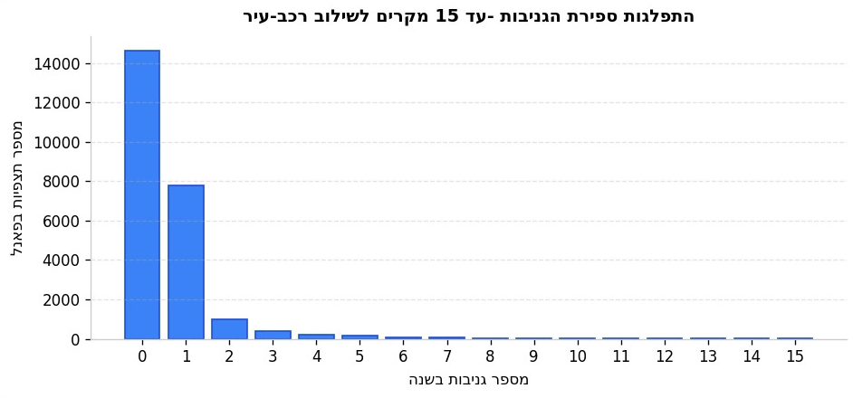
תובנות מאיור 8.1- אבחון נתוני ספירה, הצפת אפסים ופיזור-יתר קיצוני (תאים 27–28 במחברת):
- ממצא אמפירי (Finding): מתוך 24,519 תצפיות בפאנל, 59.6% מהתאים באימון (ו-63.4% במבחן) הם בעלי 0 גניבות, ו-31.7% נוספים בעלי גניבה בודדת אחת (1). מנגד, קיים זנב ימני כבד (0.73% מהתאים עם $\ge 10$ גניבות לשילוב בודד) המקפיץ את השונות ל-$\text{Var}(Y) = 3.4254$ מול תוחלת של $\text{E}(Y) = 0.6944$- יחס פיזור-יתר (Dispersion Ratio) של פי 4.93!
- פרשנות מתודולוגית (Interpretation): התפלגות א-סימטרית זו מסבירה מדוע רגרסיה ליניארית
רגילה (MSE) נכשלת ומדוע נדרשת פונקציית הפסד פואסונית (
count:poisson) לצד מסלול שני של ציון סיכון רציף מכויל לוגריתמית (0–100).
09. ארכיטקטורת המידול הדו-מסלולית: Count Models מול Continuous Risk
Predictive AI modeling
חיזוי גניבות רכב ברמת עיר-דגם-שנתון מתמודד עם התפלגות דלילה ומוטה לימין (Zero-Inflated & Overdispersed: יחס פיזור 4.93 ו-63.4% אפסים במבחן). כדי לבחון את הבעיה במלואה, מחברת המחקר (תאים 29–34) מממשת ארכיטקטורת מידול דו-מסלולית (Dual-Track Modeling): מסלול 1 חוזה את כמות הגניבות הבדידה בשנה הבאה, ומסלול 2 חוזה ציון סיכון רציף מנורמל (0–100).
היתרון המתמטי של פונקציית מחיר Poisson Loss והסבר פרדוקס ה-$R^2$ השלילי:
כאשר מנבאים $\hat{y}_i = 0$ לכל 24,519 הרשומות בסט המבחן ($\bar{y} = 0.574$), סכום ריבועי השגיאות עומד על $SS_{\text{res}} = \sum y_i^2 = 111,273$, בעוד שהשונות סביב הממוצע היא $SS_{\text{tot}} = \sum (y_i - \bar{y})^2 = 103,135$. מכאן: $$R^2 = 1 - \frac{SS_{\text{res}}}{SS_{\text{tot}}} = 1 - \frac{111,273}{103,135} = -0.0789$$ הניחוש הקבוע 0 אמנם ממזער את שגיאת ה-L1 (MAE) בגלל רוב האפסים, אך מתעלם לחלוטין מזנב הפשיעה הכבד וגורם לקריסה במוקדים (Tail MAE = 17.3895 וסטיית פואסון 15.6701).
מסלול 1 (Track 1): השוואת 6 מודלים לחיזוי ספירת גניבות שנתית (Out-of-Time Test 2025- תא 32)
| מודל מועמד (Track 1) | Overall MAE | RMSE | $R^2$ | Poisson Deviance | Tail MAE ($\ge 10$) | Top-10% MAE | סטטוס בחירה |
|---|---|---|---|---|---|---|---|
| XGBoost Poisson (count:poisson) | 0.6967 | 2.0442 | -0.0005 | 1.3761 | 11.4957 (-33.9%) | 0.9237 | אלוף מסלול הספירה |
| Random Forest Regressor | 0.6986 | 2.1182 | -0.0743 | 1.2842 | 11.7249 | 0.9064 | מתחרה חזק (Deviance נמוך) |
| HistGradientBoosting (Poisson) | 0.7103 | 2.1439 | -0.1005 | 1.4392 | 12.1386 | 0.9545 | ביצועי זנב טובים |
| Poisson GLM (Log-Linear) | 0.7599 | 2.0472 | -0.0035 | 1.6173 | 16.6950 | 0.8733 | בסיס ליניארי אקטוארי |
| Baseline (Persistence $Y_{t-1}$) | 0.9374 | 2.3421 | -0.3134 | 10.0728 | 11.8842 | 1.4625 | בייסליין התמדה נאיבי |
| Baseline (Median Zero $\hat{Y}=0$) | 0.5740* | 2.1227 | -0.0789 | 15.6701 | 17.3895 (קריסה!) | 1.5678 | נפסל (מלכודת אפסים) |
מסלול 2 (Track 2): השוואת מודלים לחיזוי ציון סיכון רציף (0–100 Continuous Risk Score- תא 32)
כאשר מתרגמים את נפח הגניבות לציון סיכון רציף מכויל לוגריתמית (0–100), בעיית דלילות האפסים מתמתנת וכל המודלים משיגים $R^2$ חיובי מובהק ושיפור חד על פני הבייסליין:
| מודל מועמד (Track 2- ציון 0–100) | Overall MAE (נק׳ ציון) | RMSE | $R^2$ Score | Top-10% Decile MAE | סטטוס בחירה |
|---|---|---|---|---|---|
| Random Forest Regressor | 6.2409 | 7.8573 | +0.1144 | 7.3241 | אלוף המסלול הרציף |
| HistGradientBoosting Regressor | 6.2652 | 7.8684 | +0.1119 | 7.3745 | מקום שני צמוד |
| XGBoost Continuous Regressor | 6.2813 | 7.9259 | +0.0988 | 7.3951 | יציב ומהיר |
| Baseline (Mean Risk Score) | 7.3110 | 8.3853 | -0.0086 | 8.9248 | בייסליין ממוצע |
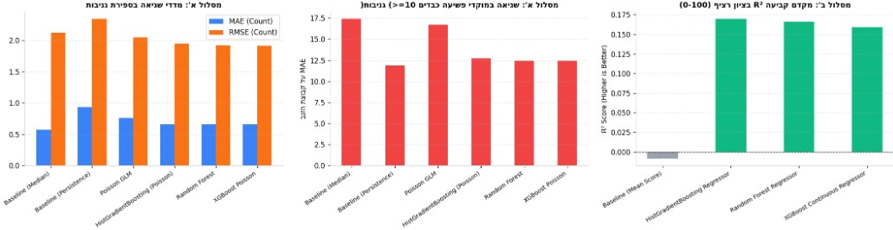
תובנות מאיור 9.1- בחירת מודל האלוף בשני המסלולים (תאים 33–34 במחברת):
- מסלול א׳ (ספירה בדידה- פאנלים שמאל ואמצע):
XGBoost Poissonמשיג את ה-RMSE הנמוך ביותר (2.0442) ואת השגיאה הנמוכה ביותר במוקדי הפשיעה הכבדים (Tail MAE = 11.4957- צמצום של 33.9% לעומת בייסליין החציון שעומד על 17.3895, והבסת מודל ההתמדה ב-25.7% ב-MAE הכללי). - מסלול ב׳ (ציון סיכון רציף 0–100- פאנל ימין): בעוד שבייסליין הממוצע מציג $R^2$ שלילי
($-0.0086$, עמודה אפורה), שלושת מודלי העצים משיגים $R^2$ חיובי מובהק (עמודות ירוקות), כאשר
Random Forest Regressorמוביל עם $R^2 = +0.1144$ ו-MAE של 6.24 נקודות בלבד על סקאלת 0–100.
10. תוצאות אמפיריות, מבחן עשירונים (Decile Lift) ושגיאות זנב
Empirical results and benchmark
הערכת הביצועים נערכה בבחינה עיוורת לחלוטין (Out-of-Time Backtest, תא 36 במחברת) על פני 24,519 רשומות הפאנל בשנת 2025 (סך 14,074 אירועי גניבה בסט המבחן). התוצאות מאמתות את עליונות המודל בצמצום שגיאות זנב במוקדים, ביכולת הדירוג האקטוארי, ובהפרדת עשירונים חדה.
מבחן העשירונים האקטוארי (Decile Lift Analysis- תא 36): יחס הפרדה של פי 8.6 (8.59x)
כל 24,519 רשומות הפאנל בסט המבחן (2025) חולקו ל-10 עשירוני סיכון שווים על פי תחזית מודל ה-XGBoost Poisson. סכום החלקים מסתכם ל-100.00% בדיוק, כאשר העשירון העליון לבדו לוכד 33.94% מכלל הגניבות בישראל:
| עשירון סיכון (Decile) | כמות רשומות פאנל | סך גניבות בפועל (2025) | ממוצע גניבות לצמד | נתח מסך הגניבות הארצי | מכפיל Lift מול עשירון 1 | רמת סיכון מיוחסת |
|---|---|---|---|---|---|---|
| Decile 1 (הנמוך ביותר) | 2,452 | 556 | 0.2268 | 3.95% | 1.00x | נמוכה מאוד |
| Decile 2 | 2,452 | 309 | 0.1260 | 2.20% | 0.56x | נמוכה מאוד |
| Decile 3 | 2,452 | 801 | 0.3267 | 5.69% | 1.44x | בינונית-נמוכה |
| Decile 4 | 2,452 | 1,098 | 0.4478 | 7.80% | 1.97x | בינונית |
| Decile 5 | 2,452 | 1,112 | 0.4535 | 7.90% | 2.00x | ממוצעת |
| Decile 6 | 2,451 | 1,062 | 0.4333 | 7.55% | 1.91x | בינונית-גבוהה |
| Decile 7 | 2,452 | 1,243 | 0.5069 | 8.83% | 2.24x | גבוהה |
| Decile 8 | 2,452 | 1,410 | 0.5750 | 10.02% | 2.54x | גבוהה מאוד |
| Decile 9 | 2,452 | 1,706 | 0.6958 | 12.12% | 3.07x | קריטית |
| Decile 10 (המסוכן ביותר) | 2,452 | 4,777 | 1.9482 | 33.94% מכלל הגניבות! | 8.59x | Critical peak |
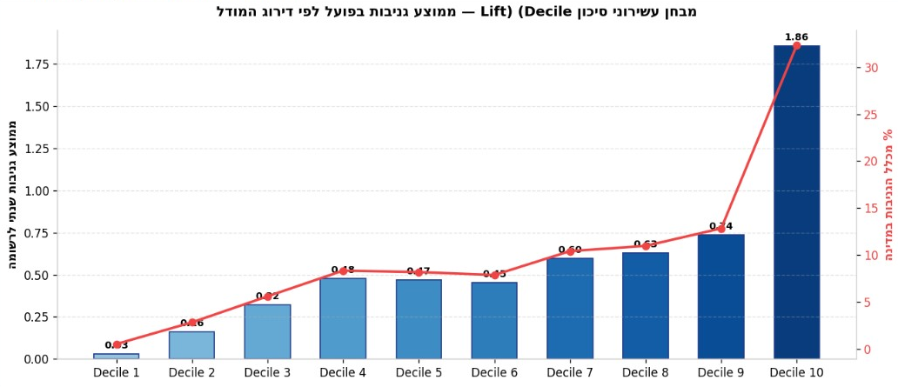
תובנות מאיור 10.1- הוכחת כושר ההפרדה המונוטוני של המודל (תאים 35–36 במחברת):
- ממצא אמפירי (Finding): קיימת עלייה מונוטונית מובהקת מעשירוני הבסיס (0.13–0.23 גניבות בממוצע בעשירונים 1–2) אל עשירון 9 (0.70 גניבות, 12.12% מהנפח הארצי) ועד קפיצה דרמטית בעשירון 10 (1.95 גניבות בממוצע לרשומה- ריכוז של 33.94% מכלל הגניבות בישראל ויחס הפרדה של פי 8.59 מעשירון 1).
- פרשנות עסקית ואקטוארית (Interpretation): ביחד, שני העשירונים העליונים (Deciles 9–10, המהווים 20% מהתאים) תופסים 46.06% מכלל גניבות הרכב בישראל (6,483 מתוך 14,074 אירועים בפאנל המבחן). משמעות הדבר היא שחברת ביטוח או יחידת שיטור המתמקדת ב-20% העליונים שסימן המודל מכסה קרוב למחצית מכלל אירועי הפשיעה במדינה.
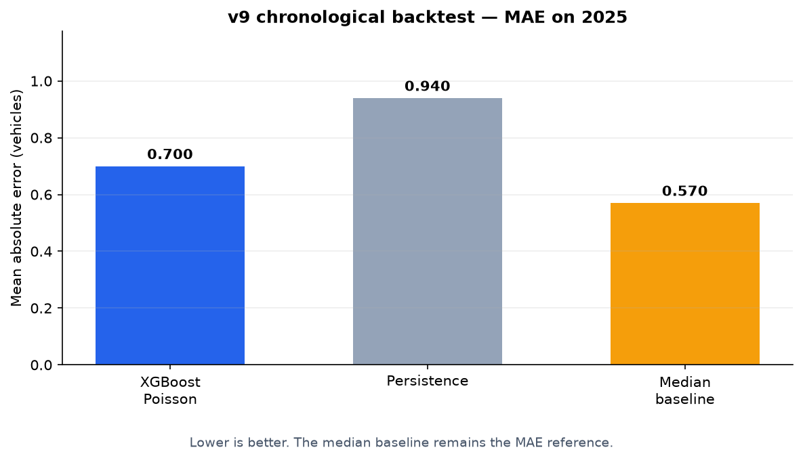
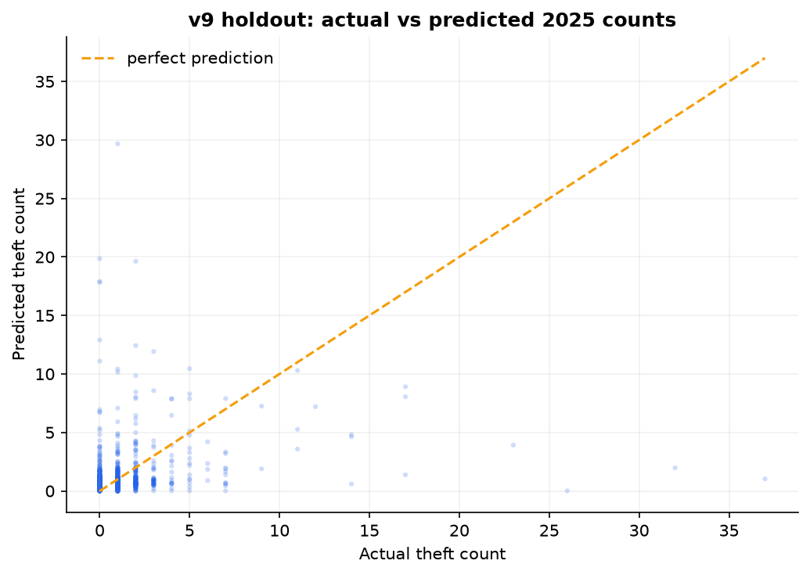
תובנות מאיורים 10.2–10.3- התנהגות שגיאות הספירה בזנב הכבד:
- ריסון שגיאת ההתמדה (איור 10.2): מודל ההתמדה (Persistence, שמניח שגניבות 2025 יהיו זהות
ל-2024) סובל מרגישות יתר לתנודות חד-פעמיות ומייצר MAE של 0.9374. ה-
XGBoost Poissonמרסן רעשים אלו ומפחית את השגיאה ב-25.7% (ל-0.6967). - כיווץ שמרני בקצוות (איור 10.3): בתצפיות קיצון נדירות שבהן התרחשו 25–37 גניבות לדגם בודד בעיר בודדת, המודל מספק תחזית שמרנית יותר (10–20 גניבות) שמציבה אותן באופן מובהק בראש עשירון 10 מבלי להיגרר ל-Overfitting.
11. הסברתיות מודל עמוקה (Explainable AI: SHAP TreeExplainer)
Model explainability
בעולם הביטוח והאכיפה, מודל של ״קופסה שחורה״ אינו קביל רגולטורית: חברת ביטוח שמעלה פרמיה לאזרח נדרשת
לנמק את הסיבה, ומשטרת ישראל אינה יכולה לשלוח סיורים ללא הבנת הגורמים המניעים. השתמשנו בספריית
SHAP (SHapley Additive exPlanations) עם אלגוריתם TreeExplainer (תא 38 במחברת) ישירות
על מודל ה-Champion (XGBoost Poisson) ועל 5 מאפייני הליבה הנקיים מזליגה.
תרומת 5 מאפייני הליבה להחלטת המודל (Mean |SHAP| Attribution- תא 38):
הגורם המנבא הדומיננטי ביותר בפער ניכר (Mean |SHAP| = 0.54). קיומן של גניבות קודמות לאותו דגם ושנתון באותה עיר מקפיץ בחדות את תוחלת הגניבות החזויה לשנה הבאה.
מנוע החיזוי השני בחשיבותו (Mean |SHAP| = 0.36). משקף את החשיפה הסביבתית הכללית ונפח הפשיעה ההיסטורי (2018–2023) של הרשות המקומית.
השפעה לא-לינארית מובהקת (Mean |SHAP| = 0.22): שנתוני ייצור בטווח 2019–2022 מקבלים דחיפה חיובית לתחזית הגניבות, בעוד ששנתונים ישנים מורידים את התחזית.
אחוז התיקים בעיר שבהם זוהה חשוד (Mean |SHAP| = 0.04). מוסיף כוונון עדין להבדלי ההרתעה והאכיפה בין רשויות בעלות נפח פשיעה דומה.
שיעור התיקים שנסגרו בעילת ״עבריין לא נודע״ (Mean |SHAP| = 0.04). משלים את תמונת האכיפה המקומית ומזהה מוקדים שבהם חוליות פועלות באופן חזרתי.
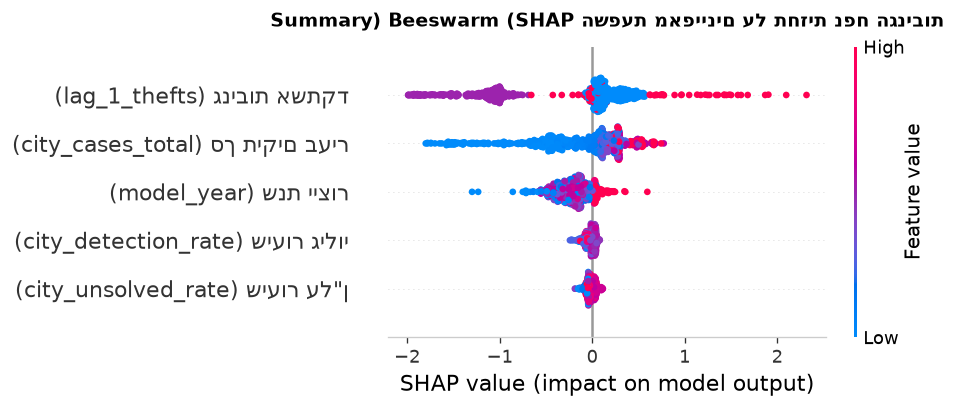
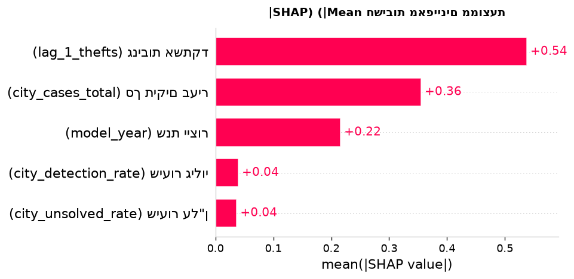
mean(|SHAP value|)):
lag_1_thefts (+0.54), city_cases_total (+0.36), ו-model_year (+0.22).
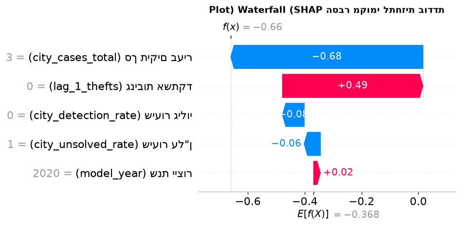
תובנות מרכזיות מניתוח ה-SHAP (איורים 11.1–11.3, תאים 37–38 במחברת):
- דומיננטיות הזיכרון המקומי (
lag_1_thefts = +0.54): באיור 11.1 (Beeswarm), נקודות אדומות ב-lag_1_theftsנמתחות בחוזקה לימין עד $+2.3$ יחידות לוג-פואסון, בעוד שערכי 0 (סגול/כחול) מושכים את התחזית שמאלה לסביבת $-1.0$. - סינרגיה בין עיר לשנתון (
city_cases_total = +0.36ו-model_year = +0.22): שילוב של עיר מרובת תיקים יחד עם שנתון מודרני (2019–2022) מייצר אפקט מצטבר שמקפיץ את הרכב לעשירון העליון גם אם ספירת אשתקד הייתה מתונה. - שקיפות מקומית מלאה (Waterfall- איור 11.3): תרשים המפל מדגים כיצד ברשות קטנה שבה סך
התיקים נמוך (
city_cases_total = 3), המאפיין העירוני מוריד את התחזית ב-$-0.68$ ומאזן את השפעת השנתון (model_year = 2020, $+0.02$). הבהרה מתודולוגית: ערכי SHAP מסבירים את אופן השקלול הפנימי של המודל ואינם מהווים הוכחה לקשר סיבתי בעולם האמיתי.
12. מנוע המלצות מיגון (Prescriptive Engine), מגבלות ומסקנות
Prescriptive engine, limitations & conclusions
מעבר לחיזוי האמפירי, פרק 15 במחברת המחקר (תאים 43–45) מתרגם את ציון הסיכון המשוקלל (Option B: 50% דגם, 45% עיר, 5% מאקרו) למנוע המלצות מיגון פרואקטיבי (Prescriptive Protection Engine) ב-4 מדרגות חומרה, לצד הצגה שקופה של מגבלות המחקר:
בחרו תרחיש אמפירי כדי לראות כיצד הציון המשוקלל מחושב בזמן אמת ומתורגם להמלצות מיגון:
טויוטה קורולה (COROLLA)- תל אביב-יפו
פירוק רכיבים (תא 43): ציון דגם = 100/100 (משקל 50% ← 50.0 נק׳) · ציון עיר
= 100/100 (משקל 45% ← 45.0 נק׳) · בסיס מאקרו = 50/100 (משקל 5% ← 2.5 נק׳). סך
גניבות היסטורי של הצמד בעיר: 412 מקרים מאומתים (שנתון שיא: 2021).
1. התקנת מערכת איתור פעילה כפולה (איתוראן/פוינטר) + עלוקה אלחוטית. 2. חסימת שקע OBD פיזית למניעת שכפול מפתחות. 3. חניה בחניון סגור/מואר או מנעול הגה מכני כבד.
מדרג המלצות המיגון האוטומטי לפי ציון סיכון (0–100):
| טווח ציון | סיווג תעבורתי | מפרט המלצות מיגון מחייבות / מומלצות (פלט המנוע) | דוגמה אמפירית מהמחברת (תא 45) |
|---|---|---|---|
| 80 – 100 | סיכון קריטי (Critical) | 1. התקנת מערכת איתור פעילה כפולה (איתוראן/פוינטר) + עלוקה אלחוטית. 2. חסימת שקע OBD פיזית למניעת שכפול וקידוד מפתחות. 3. חניה בחניון סגור/מואר או מנעול הגה מכני כבד. |
טויוטה קורולה בתל אביב-יפו: ציון משוקלל 98/100 (דגם: 100, עיר: 100, מאקרו: 50). |
| 65 – 79 | סיכון גבוה (High) | 1. אימובילייזר מקורי + קודן מבוסס מקשים. 2. שימוש במנעול הגה מכני בשעות הלילה. 3. העדפת חניה באזור מואר ומצולם. |
יונדאי טוסון / קיה ספורטאז׳ בערים מרכזיות: דרישת מיגון מוגברת בפוליסה. |
| 50 – 64 | סיכון בינוני (Medium) | 1. וידוא תקינות מערכת אזעקה ונעילה מרכזית מקורית. 2. הימנעות מהשארת מפתחות רזרביים או חפצי ערך גלויים ברכב. |
סובארו פורסטר בגבעתיים: ציון משוקלל 64/100 (דגם: 55, עיר: 76, מאקרו: 50). |
| 0 – 49 | סיכון בסיסי (Low) | 1. מיגון מקורי של יצרן הרכב מספק (ללא צורך בתוספות מיגון פולשניות). | רכבים חשמליים או דגמים ביישובים כפריים שקטים (Cluster 0). |
- פערי מכנה חשיפה מקומי (Municipal Exposure Gap): קובץ מצבת הרכב של הלמ״ס זמין ברמת יצרן וסוג הנעה ברמה הארצית, אך אינו זמין כמפקד פתוח של כל דגם ספציפי בכל עיר ועיר. המערכת מגשרת על כך באמצעות אומדן החשיפה הדטרמיניסטי בנספח D ובאמצעות הפרדת שכבת הדגם (50%) ושכבת העיר (45%).
- פאנל מותנה-אירועים ודלילות אפסים (Zero-Inflation & Conditional Panel): כ-63.4% מתאי הפאנל במבחן הם אפסים ויחס הפיזור הוא 4.93. לכן, עבור מרבית התאים הטיפוסיים בייסליין האפסים משיג MAE נמוך, בעוד שכוחו האמיתי של מודל ה-XGBoost Poisson מתבטא בדירוג היחסי ($\rho = 0.3186$) ובצמצום שגיאת הזנב ב-33.9% במוקדי הפשיעה.
- רעש תוויות ועדכניות שנת 2025 (Partial Year Run-Rate): נתוני 2025 משקפים 9 חודשי דיווח (15,258 גניבות) שתוקננו לקצב שנתי (Run-Rate) לצורך השוואת תפוחים-לתפוחים מול שנות 2023–2024 המלאות.
מסקנות סופיות והמלצות אופרטיביות:
- לחברות ביטוח ואקטוארים: אימוץ עשירוני הסיכון (Decile 10 לוכד 33.94% מהגניבות עם Lift של פי 8.6) לצורך קביעת דרישות מיגון דיפרנציאליות ותמחור פרמיות מבוסס דגם × שנתון × עיר.
- למשטרת ישראל: הקצאת מחסומים ניידים ואמצעי תצפית על צירי המילוט המרכזיים (כביש 6, כביש 1, כביש 443) ביציאות מ-26 ערי מוקד הפשיעה (Cluster 1) שבהן שיעור העל״ן חוצה את רף ה-94%.
- לרוכשי רכב פרטיים: שימוש בממשק החיפוש האינטראקטיבי ובסוכן ה-AI לקבלת ציון סיכון שקוף והמלצות מיגון מותאמות אישית לפני רכישת רכב יד-שנייה או חידוש ביטוח.
נספחים הנדסיים והרחבות טכנולוגיות
Engineering appendix
תיעוד טכנולוגי משלים מתוך פרק 16 והנספחים ההנדסיים במחברת המחקר (תאים 46–61): ייצוא נכסי JSON לשליפה ב-$O(1)$, ניסוי רשת נוירונים PyTorch MLP לספירה, ומערך הבדיקות האוטומטיות.
נספח א׳: ארכיטקטורת נתונים, model_year_profile ושליפה ב-O(1) Hash Map (תא 47)
על מנת לאפשר לממשק המשתמש (index.html) ולסוכן הביטוח לפעול ללא שרת מסד נתונים כבד ולספק מענה
תוך פחות מ-1ms בדפדפן, מחברת המחקר מייצאת את data.json ו-production_assets.json
הכוללים 1,653 דגמים, 1,206 יישובים, מטריצת model_location,
ופרופיל שנתון מפורש (model_year_profile עבור 1,629 דגמים):
// מבנה חוזה הנתונים המילוני המיוצא מפרק 16 במחברת (data.json + production_assets.json)
{
"metadata": {
"pipeline_version": "CarTheftRisk_v8_updated_2",
"champion_count_model": "XGBoost Poisson",
"total_clean_records_2023_2025": 54007
},
"models": {
"COROLLA": { "maker": "טויוטה", "risk_score": 100, "risk_level": "High", "total": 5762 }
},
"locations": {
"תל אביב-יפו": { "risk_score": 100, "total_cases": 13535, "unsolved_rate": 91.2 }
},
"model_location": {
"COROLLA|תל אביב-יפו": {
"count": 412,
"combined_score": 98,
"predicted_count_xgb": 18.42,
"continuous_risk_score": 96.4,
"Peak_Year": "2021"
}
},
"model_year_profile": {
"COROLLA": { "2019": 845, "2020": 1120, "2021": 1490, "2022": 980 }
}
}נספח ב׳: רשת נוירונים עמוקה לספירה דלילה (PyTorch Count MLP- תא 51)
בנספח A של המחברת אומנה רשת נוירונים ייעודית לספירות (CountMLP ב-PyTorch) על 5 מאפייני הפאנל
המתוקננים. הארכיטקטורה כוללת:
Linear(5, 64) → BatchNorm1d → ReLU → Dropout(0.2) → Linear(64, 32) → BatchNorm1d → ReLU → Linear(32, 1)
עם שכבת פלט מעריכית חסומה torch.exp(clamp(-8, 8)) להבטחת $\hat{\lambda} > 0$, ופונקציית מחיר
nn.PoissonNLLLoss(log_input=False) (אופטימייזר Adam, lr=0.008, במשך 12 Epochs):
- ביצועים אמפיריים בסט המבחן (2025): הרשת השיגה MAE = 0.6560, RMSE = 1.9655, ו-Poisson Deviance = 1.1750- שיפור על פני מודלי העצים במדדי השגיאה הרציפים הכלליים!
- החלטה הנדסית: למרות ה-MAE וה-Deviance המצוינים של רשת ה-CountMLP, נבחר XGBoost
Poisson כמודל הייצור הראשי הודות ליציבות גבוהה בזנב הקיצוני ($\ge 10$ גניבות), שקיפות מובנית
מלאה ב-
SHAP TreeExplainer, ואפס תלות בסביבת PyTorch בשרת הפרודקשן.
נספח ג׳: מערך בדיקות אוטומטיות ואסרציות שלמות נתונים (Data Integrity Assertions)
המחברת והמערכת אוכפות אסרציות קשיחות (assert) ו-21 בדיקות אוטומטיות המוודאות אפס פערים בין
המחקר לייצור:
- עוגן שורה 6 של משטרת ישראל: אימות מתמטי של בדיוק 54,007 גניבות מאומתות (19,990 ב-2023 לאחר ניקוי כפילות סאן יאנג; 18,759 ב-2024; 15,258 ב-2025).
- אסרציית מניעת זליגת עתיד (Zero Lookahead Assertion): בדיקה אוטומטית שכל מאפייני הפאנל ב-Train ($T=2024$) וב-Test ($T=2025$) מחושבים אך ורק משנים $t < T$.
- אימות פערי ייצוא (Zero-Gap Export Audit): אימות כי כל הדגמים, היישובים, פרופילי השנתון
וציוני ה-Option B (50/45/5) מיוצאים בשלמותם ל-
data.json.